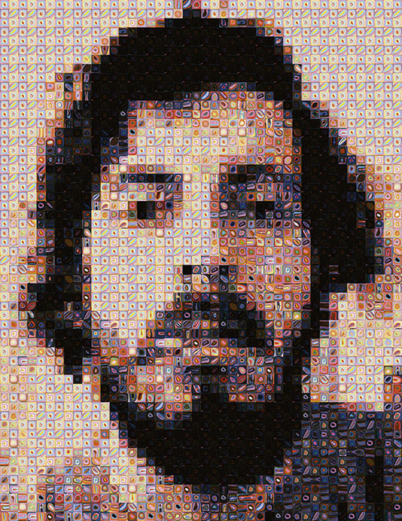

Somebody's wrong on the Internet (about Scott's Blake Chuck Close emulator)
Oops. I’ve written yet another unreasonably long (but hopefully clever) blog post comment. Clocking in around 1820 words, it’s so excessive I’m reposting it here to make it easier to justify to myself. I really should try to stick to my own rules about disagreeing about art on the internet.

Context: Artist Scott Blake posted on Hyperallergic (“My Chuck Close Problem”) about his surprise and frustration at having Chuck Close threaten legal action in response to his hommage “Chuck Close Filter” (aka freechuckcloseart.com). Reactions from Hyperallergic readers are overwhelmingly negative if not downright hostile, resulting in a barrage of flames and put-downs in the comment section, the majority of which dismiss the idea of a “filter” or any type of software as artwork.
My not-so-suprising take (permalink here, feel free to vote up - or not):
I am usually skeptical of the reproduction of the work of another (usually famous) artist through code. Life is too short and I barely have time to make my own art let alone reproduce that of others. However, the reader commentary on Blake’s Hyperallergic article is spitefully barking up the wrong tree and he doesn’t deserve it
Cue mega-rant:
Whoa, there really is a whole lotta hatin’ going on in here.
it almost makes my heart go pitter-patter. People still care about art? Awesome. Just too bad that most of the commentary smells like misplaced moral indignation: “Reproduce the work of a famous artist? How dare you!”
Did 20th century art history not happen? Was Pop Art just a parlor game with hedge fund byproducts? What about sampling and remixing - or are those tools still only for illicit street use? Copying the master(s) hardly seems very novel, many famous (and cash-generating) examples copied very literally indeed. See http://en.wikipedia.org/wiki/Appropriation art for some examples, not all are pertinent to this case but it’s still a useful refresher if you think Originality and Unique Authorship survived the End of Modernism. (I know reading Wikipedia is some people’s idea of living dangerously, but apply some critical thinking and you should be safe from contamination.)
If you want to be angry about appropriation, go and hate on Rob Pruitt for stealing from artists poorer than him and - yes - inarguably being a prick about it. Isn’t that a little more worthy of your scorn?
Moving on: Since it is self-evident that Scott Blake’s project falls into a tradition with numerous precedents, what is the crux of the present debate? Filtering out the more knee-jerk flames the criticism offered here can be loosely summarized thus:
A: Photoshop filters and computer programs are banal and can’t possibly be called art.
B: Scott Blake is a cocky prick looking for attention.
C: Respect my Copyright, mortals. Or else.
Point C has already been addressed. Point B is a subjective assessment that is valid as an arguable position, but going by the yardstick of the average NYC artist Scott is coming across as pretty tame and un-prick-like. He seems earnest, even - a character trait that might well be to his detriment in this debate. Honesty is icky and unlikely to win you many friends in an art world where insincerity and tactical dismissiveness seems de rigeur (or at least a time-honored way to get laid.)
So we’re left with point A, a reactionary argument that sounds all too familiar. To be honest I haven’t rarely heard it argued since the dark ages of the pre-Web 1990’s receded into the rearview mirror of my Delorean. I would have thought the recent Age of Smart Phone Enlightenment would’ve nailed that particular coffin shut, even David Hockney is making cute playing with his iPhone these days. (Using a smart piece of software, I might add.) But let’s run through this thing one more time, shall we?
I make a living as an artist who creates visuals and objects by writing computer code. I don’t sketch, I don’t make models, I writ code. Some of my pieces are pure software -computational animations that evolve endlessly without interaction, displayed on screens, as projections or giant public LED facades. (You’re right - a self-generating computational animation does sound just like the functional description of a screensaver slash iTunes visualizer. Much the same way that a Chuck Close masterpiece is functionally identical to kitsch paintings of puppies.)
But virtuality has its limits, pixels are only so interesting and the feeling of observing a form evolving through a mediating membrane is ultimately somewhat alienating. So I also use computer-controlled machines (laser cutters, 3D printers, plotters etc.) to produce physical works and drawings - without ever touching the material directly. Look Ma, no hands. Once completed, the software systems I create are capable of semi-autonomous producion of endless series of unique forms and images based on seed rules I’ve encoded into the software along with carefully modulated random parameters.
Admittedly, this kind of work is not everybody’s cup of tea. Scepticism and prejudice abounds, often concerned with the horrors of automated art machines and the non-presence of the artist’s hand. Some people - technophobes and technocrats alike - simply don’t like it, which is their inalienable right in any society based on the notion individual freedom. And that’s fine with me. As the curator of Frankfurter Kunstverein said when faced with a sumptuously rendered virtual landscape: generator: “I don’t even know what I’m looking at.”
But whatever your personal preference, I dare you to challenge the validity of code-based formalism as an artistic practice. Not only does algorithmic art go back over 40 years, it comes with more theory than you can shake a stick at. It might not be mainstream (esp. not in the US), but it has a long history of milestone moments such as the Cybernetic Serendipity exhibition at ICA, 1968, the afore-mentioned MoMA show and the New Tendencies movement in the former Jugoslavia. Followed of course, by the evolution of contemporary media art through the 1990’s until today along with cameos and walk-on appearances in mainstream art practices. Lately this kind of work is cropping up in unexpected places. Did you know Anthony Gormley uses software tools developed in-house to articulate and plan many of his pieces? If you’re thinking as big as Anish Kapoor you’d do well to enlist a horde of structural engineers from Arup.
In the light of this tradition, Scott’s work takes on a quite different reading than the dismissive critique so prevalent here. Firstly: Scott is just one of many artists to recreate existing artworks and artistic styles by encoding them as a set of generative rules - usually as a double-edged comment on the reduction of human creativity to mechanical process but sometimes also just because it can be a fun thing to do. Michael Knoll’s interpretation of Mondrian’s “Composition With Lines” is a classic example, a little googling will yield plenty of others.
Secondly: Viewed from a perspective that includes an awareness of software processes as creative material, what Scott has done is anything but trivial. The task of creating an algorithm like the Chuck Close filter requires significant analysis, a lot of trial-and-error and a fair amount of skill. (Mondrian would be much easier.) Computer Science and math only gets you so far, you also need the ability to identify the artistic principles involved in Close’s grid process. How is the form produced, what is the secret sauce that makes it stand out? How can an intuitive process of creation be translated to a manageable chain of parametric operations?
Then follows the challenge of describing a generative system that will simulate those artistic processes in a manner that produces output that appears “natural” and organic. You’ll be staring down the Uncanny Valley of human perception, which will instantly recognize and dismiss a simplistic approach as mechanical and unworthy of a second look. You might be a master of the arcane art of computational geometry, without artistic instinct and formal flair your undoubtedly clever algorithm will still look like a Science Show exhibit.
Developing an intuitive and fluid approach to creating form through parametric systems takes time. It could be argued that the process of selecting, exploring and modifying rule-based processes requires an understanding of code as a malleable material, requiring a virtuosity very much like that admired in more conventional art forms. Your paint stroke style is my customized triangle subdivision, different tools applied towards a surprisingly similar outcome.
Returning to the topic at hand: Photoshop filters do come with a heavy stigma attached - and not without reason. In a hypothetical battle for art’s soul mindless filters are the golem servants of The Enthusiast, that most-feared vanguard of gibbering madness. But if you read Scott’s description you’ll see that he’s not actually talking about a Photoshop filter - he’s just using the term “filter” to describe a software system that takes an input image and produces a transformed copy through the application of an algorithm.
This is a completely accurate description, technically speaking. But whether using “filter” was a good move is debatable. A filter sounds like a passive mechanism with no creative input, unlikely to move the imagination of art audiences. Worse, it goes a long way towards justifying the perception that the creation of such a system is a straight-forward by-the-numbers task, rather than a creative process requiring skill and intution with plenty of pitfalls and the ever-present potential of failure.
If the work was titled “The Chuck Close Machine” it might imbue it with a little more flair, implying a standalone work rather than a subservient mechanical device. It would even justify the co-opting of Conceptual Art as a framework, always a win-win scenario for most purposes. Think Tinguely, Lewitt and Systems Art mixed with Haraway’s cyborg narratives and some anti-Modernist pixie dust and you might just have a decent artist statement.
In conclusion I think we can all agree that dismissing Scott’s work as a banal Photoshop filter and implying that requires no skill is A: Culturally regressive, B: Ignorant and C: Behavior not becoming of a citizen of the 21st Century. The copyright critique holds little water, so that just leaves whether you think he’s a prick. I can’t help you with that one, it seems unlikely but who knows. Knowing Scott only as an online presence, I can’t even rule out the possibility that he is a dog with freakishly prehensile paws.
Still, I would like to posit some questions for your consideration, questions that in my mind are a little more to the point than “Was Scott nice to Chuck?”:
- Is the reproduction of another artist’s work a great use of your time? (Life is short, remember.) Even if you do so with success, is it as satisfying (for artist and viewer both) as creating a completely original work? What is the motivation - hommage, name-checking or simple fascination?
- If an artist does decide to walk this path, is it wise or naive to present it as an earnest hommage? Would a witty pomo narrative of mechanical reproduction be the smarter move?
- Would it help if Scott had spent five years painstakingly painting copies of Close’s work? Would that earn him some monomaniacal street cred that writing a piece of software does not?
- Does Blake’s Chuck Close Machine reach its full potential, or is it too respectful of its source? The YouTube videos (http://www.youtube.com/watch?v=D4YN_sr2GrE) hint at taking the process beyond the scope of Close’s own work, but would such expanded use risk making it seem banal?
- Opinions about intention aside, is Scott Blake’s algorithm successful in recreating Chuck Close’s grid paintings? Does this have any critical significance in discussing Close’s work? Surely Close himself must have been accused of painting by numbers at one point or another?
- Is it acceptable for Chuck Close to be ignorant of digital media culture? Does this make him a noble old man or a relic of an age soon to be forgotten? Or does he in fact have a smart-but-underpaid staff of social media kids slash drones waiting in the wings, ready to preach the gospel across the fractal topology and complex networks of Facebook, Twitter, YouTube and Pinterest? Have they already infiltrated the, er, blogosphere?
- Is it ok for A-list artists to be dicks just so that they can avoid being “trivialized” and - more importantly - to protect their wealth and their “legacy”? Is Close’s legacy really that fragile - and if so - doesn’t that imply an inherent weakness?
Bonus level: For shits and giggles, discuss similarities and dissimilarities of this case and Damien Hirst’s confiscating the work of a teenage street artist who copied his infernal skull?
- art
- chuck close
- debate
- digital art
- hyperallergic
- media art
- painting
- scott blake
- theory